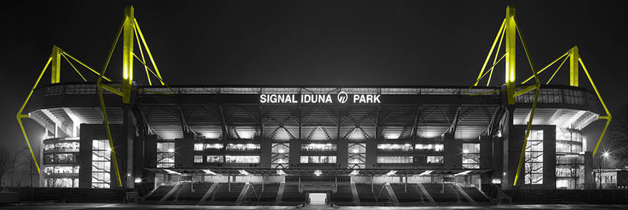
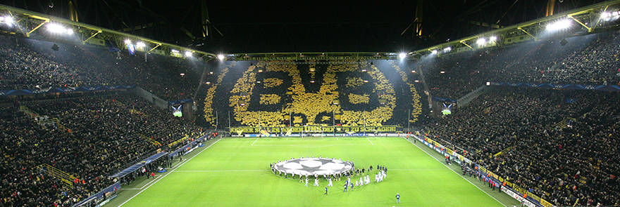

Stadium Signal Iduna Park
Eighty-One-Thousand-threehundred-sixtyfive
That's how many fans fit into SIGNAL IDUNA PARK, Germany's largest football stadium
If you had told the people of Dortmund 30 years ago about a football temple with a capacity of over
80,000 in their city centre - a stadium boasting a glass façade, undersoil heating and the largest
stand in Europe - they would have all smiled tolerantly at such a fanciful notion. Nowadays, though,
the SIGNAL IDUNA PARK on Strobelallee is Germany’s largest football stadium with a capacity of
exactly 81,365. The fact that the outlay for Borussia’s enormous arena almost crippled the club
financially is another matter entirely – and one which was fortunately resolved at the end of May 2006.

The venue located on Strobelallee – known as “the temple” by fans and regularly dubbed “the most beautiful stadium in the country” by the press, professionals and VIPS alike – has been one of the largest and most comfortable stadia in Europe since the third expansion phase was completed. A long process of construction and conversion reached its peak when the stadium was renovated in the run-up the 2006 FIFA World Cup. Yet works are carried out on the stadium every summer, with BVB investing some ten million Euro in the renovation of the now-ageing arena in 2012 alone: both the grass and the drainage in the southern half of the pitch were replaced; the south stand was strengthened by support measures; concrete sanitation measures were implemented in the northern part; seven new VIP boxes were added in the part of the east stand where the press area used to be; new cameras armed with impressive digital technology provide greater security, with the away area and the lower tier of the south stand in particular under increased observation; and in the year before new scoreboards were installed.

The stadium story began some 40 years ago - on 5 April 1965 to be precise. After four long years of discussing the expansion and modernisation of the somewhat outdated "Rote Erde" arena, the city’s Central and Financial Committee "took note of the suggestion not to expand the Rote Erde stadium, but instead to build a new football stadium by incorporating the two western practice fields and the small surface area occupied by the air bath". The first step on the path to building a completely new arena - named the "Twin Stadium" in official circles in view of its parallel construction to the Rote Erde - had been taken.
Yet the project did not gather full momentum until the city of Cologne decided against building a new stadium at the start of the 1970s, paving the way for Dortmund to apply as a host city for the 1974 World Cup – and for the construction of a new stadium. Without the federal and state funding provided, the financing of the Westfalenstadion would simply not have been feasible
I myself have been to the Signal Iduna Park many times and it is a very good experience everytime when I am there. The highlights for myself when I am in the stadium are the close views of the players and the overall athmosphere of the stadium and fans chanting for their team.